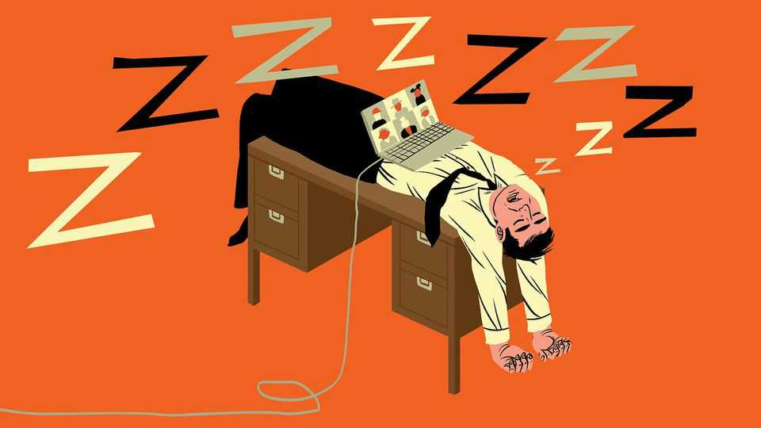

Sleep like a pro
One firm’s attempt to create a more rested workforce

Sep 17th 2026
Dear colleagues, I am pleased to say that the results of our “Sleep Into The Future” trial are now in. For background, you all know how evangelical Stew is about his own sleep routine and the importance of feeling rested. The evidence from other industries is clear about the negative effects of sleep deprivation. For these reasons, we decided to roll out a series of pilot trials to our team in Canada and to the legal function worldwide, designed to ensure that all our colleagues feel energised and ready to do their best work. I have laid out the main findings below, along with a recommendation on next steps.
We ran a specific initiative called “Waking Hours”, in which volunteers experimented with pre-industrial sleep patterns. There is some evidence to suggest that humans used to rise in the middle of the night after a first sleep, to do whatever it was that people did back then, before having a second sleep. Our volunteers were asked to wake at 2am in order to do work for two hours, before then going back to bed. Some people adjusted to this rhythm; others found it difficult to fall asleep again and entered a state of catatonic exhaustion. At least one big sales lead evaporated when our salesperson’s second sleep took place in the middle of a client meeting.
There were unexpected ripple effects. When senior people began sending emails and Slack messages at 3am, more junior team members who were not involved in the trial began waking much earlier in order to respond promptly. In turn, their pre-dawn activity prompted even more colleagues to start work earlier. Once this cascade effect is taken into account, we think that sleep quality in the organisation as a whole declined.
We dispatched a variety of sleep trackers—rings, wristbands, watches and more—to participants. One-fifth of colleagues were unable to get the devices to work at all, which suggests a concerning lack of technological nous. (We are rolling out a separate training programme, Appiness at Work, to tackle that problem.)
Tracker data are imperfect, which caused a fair degree of stress. Of those employees who did use the trackers, many reported feeling perfectly rested until their tracker told them they had had a terrible night. Others were told that they had slept like a baby when they had actually been lying awake worrying about the quality of their sleep. These inaccuracies make it hard to interpret data showing that many of our employees are sleeping during the day. The entire senior leadership team appears to have nodded off during a recent meeting, which of course cannot be true.
We tested a number of other smaller interventions, with varying degrees of success. Team members were sent a host of sleep aids, including masks, wraparound snoozebands, earplugs and mouthguards to prevent teeth-grinding. These worked better for some colleagues than others. A few people using masks had panic attacks when they woke in the night because they thought they had been taken hostage. One of our smaller colleagues was unable to get out from under her weighted blanket, and had to be released by the fire brigade.
Magnesium tablets were sent to a subset of volunteers, but due to an unfortunate error, we told people to take much higher doses than recommended. Magnesium can act as a laxative; this trial has therefore been voided.
Our survey data show that team members regarded lavender spray and herbal teas as generally pleasant, but they did not have significant effects on sleep quality. One member of the legal team accidentally lavender-sprayed himself in the face and had to go to hospital for a precautionary check-up. There is ongoing litigation connected with this incident, and we recommend not using lawyers as guinea pigs in future pilot programmes of any sort.
More generally, we recommend against pushing people to participate in this kind of initiative. It’s fine to make sleep aids available to people who request them. And enabling colleagues to share advice on sleep in an informal way is a good idea. For example, some people made specific recommendations for things to listen to when falling asleep—among them, audio versions of anything published by the World Bank, post-match interviews with athletes and every investor-relations conference call ever.
But tracking employee behaviour in the dead of night is intrusive, and imposing uniform solutions on everyone is ineffective. Before rolling this out further, we should definitely sleep on it. ■
Step inside the world of work with our Bartleby newsletter. Each week our white-collar oracle muses on the agonies of office life.